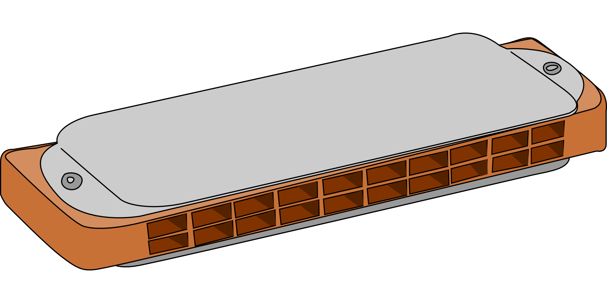

Die Mundharmonika,  wie wir sie kennen, stammt eigentlich aus Mitteleuropa. Durch Einwanderer wurde sie Ende des 19. Jahrhunderts und zu Beginn des 20. Jahrhunderts aber auch in die neue Welt gebracht. Wo viele deutsche oder österreichische Immigranten lebten, verbreitete sich die Musik der Mundharmonika sehr schnell, vor allem innerhalb der schwarzen Bevölkerung. Sie wurde von den Einheimischen als French Harp bezeichnet, obwohl dies ja nichts mit ihrem Herkunftsort zu tun hatte, schließlich stammte sie nicht aus Frankreich. Gerade für arme Musiker, die sich nicht viel leisten konnten, war die Harp ein geeignetes Instrument. Sie war vielseitig, doch schon für wenig Geld zu haben. Kurz nach der Jahrhundertwende bekam man bereits eine gute Mundharmonika für fünf Cent, vor dem ersten Weltkrieg stieg der Preis auf zehn Cent an, während der Weltkriege zahlte man für sie 25 bis 50 Cent und nach dem Krieg etwa 2 Dollar.
Bevor es die Mundharmonika gab, hatten sich besonders die schwarzen, zumeist mittellosen Musiker in vielen Fällen mit Eigenkonstruktionen geholfen. Mit Waschbrettern, Eimern, Saiten, die an die Wand gespannt wurden, Besenstielen mit Draht oder Schachteln ließ sich einiges an Musik machen. Aus dem Zuckerrohr konnte man sich Panflöten basteln, Knochen wurden zu Kastagnetten und ein Stück Metall zu einer Maultrommel. Die meisten Bluesmusiker dieser Zeit, die aus dem amerikanischen Süden stammten, arbeiteten in ihrer Kindheit und Jugend mit Instrumenten, die sie oder ihre Väter selbst bauten. Als jedoch der Trend der Mundharmonika in den Westen schwappte, war es für jeden Musiker das Größte, eines dieser Instrumente für wenig Geld zu erstehen. Sie begann langsam die Fiedel zu ersetzen, die zuvor als tonangebendes Instrument gedient hatte. Während die Väter noch auf der Geige spielten, griffen ihre Söhne eher zur Harp.
Gerade die Arbeit auf dem Feld ließ sich mit der Mundharmonika erleichtern. Viele Arbeiter brachten ihre Hosentascheninstrumente mit auf die Plantagen. Sie ließen sich sehr viel besser transportieren als jede andere Form von Musikinstrument und manche Plantagenbesitzer sorgten sogar dafür, dass Musiker engagiert wurden, um den Arbeitern etwas vorzuspielen und sie damit zu schnellerem und motiviertem Arbeiten zu bringen. Dabei war das professionelle Spielen der Mundharmonika schon damals nicht einfach. Die Atmungsvorgänge, die man benötigte, um das Beste aus ihr herauszuholen, waren äußerst kompliziert. Für den Blues eignete sich das kleine Instrument jedoch bestens. Die Klänge ließen sich bis ins kleinste Detail modellieren und die Töne konnten je nach Belieben gebogen und gezogen werden, die Mundharmonika stöhnte, seufzte, weinte und lachte. So wurde die Harp zu einer Art Gesprächspartner des Bluessängers, die auf seinen Gesang mit ihrer eigenen Art antwortete. Das so genannte Cross Harp Spiel etablierte sich schon sehr früh. Hierbei wurde ein Instrument gewählt, das eine Quarte höher war als die Tonart, in der man eigentlich spielte. Man konnte so Töne zusätzlich einfließen lassen, die durch eine Verdrängung des Mund-Rachenraums entstehen.